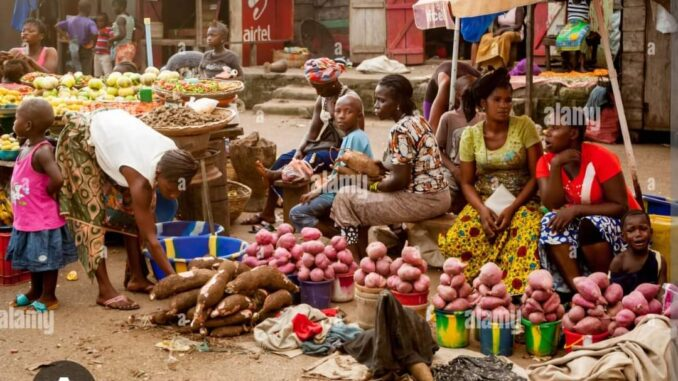

FREETOWN DAILYLocal reporting and community stories from Sierra Leone.

TOP STORY · COST OF LIVING
Rising Food Prices: How Market Costs Affect Freetown Families
Food prices shape the daily choices of shoppers, parents and market traders. Explore the pressures behind everyday essentials.
Freetown Daily News Desk · ExplainerEducation
Read full story ↓SCHOOLS & STUDENTS
Why Student Experiences Matter in Education
Learning depends on more than lessons: materials, safe facilities and support from families and teachers also matter.
Read more →Business & Economy
Read full story ↓MARKETS & LIVELIHOODS
Market Traders and Customers: Two Sides of the Price Story
Customers want affordable essentials, while traders must manage supply costs and keep their businesses running.
Read more →Community & Public Affairs
Read full story ↓
PUBLIC AFFAIRS
Why Public Meetings and Accountability Matter
Community discussions give residents a chance to raise concerns, ask questions and hear how decisions may affect their lives.
Read more →Stay informed with Freetown Daily
Local stories, clearly presented. Return for new reporting and community updates.
Contact the newsroom